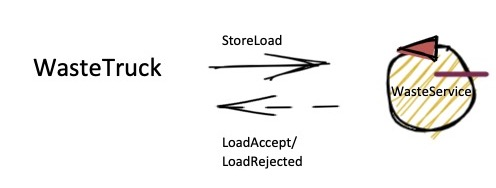
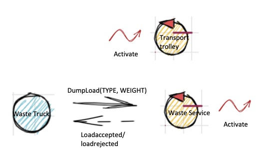
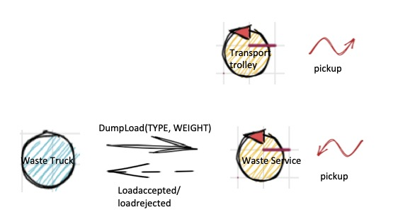
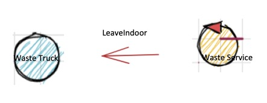
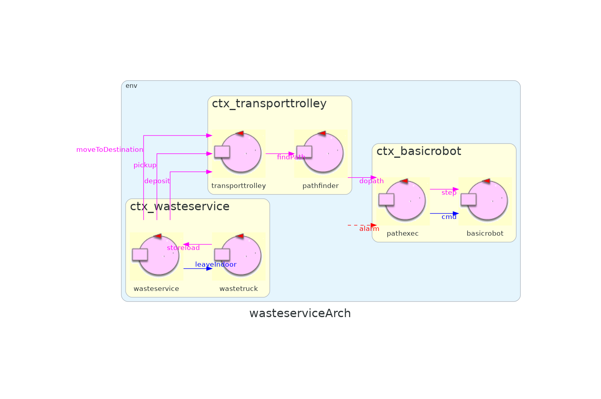
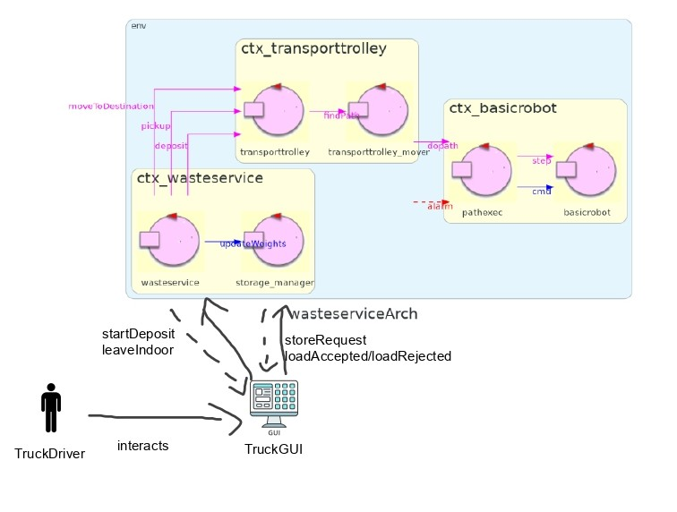

Introduction
Requirements
Testo requisiti fornito dal committenteRequirement analysis
Requisiti funzionali¶
Requisiti riguardanti la funzionalità CORE del sistema-
Arrivo waste truck: Un waste truck si reca nella posizione indoor ed invia una richiesta per il deposito di un certo materiale (glass or plastic) e il carico che vuole depositare.
-
Accettato: nel caso in cui il carico che si vuole depositare sommato al carico attuale dell'apposito container non ecceda una determinata soglia (PMAX or GMAX), wasteService invia la risposta loadaccepted .
-
Respinto: nel caso in cui il carico che si vuole depositare sommato al carico attuale dell'apposito container ecceda una determinata soglia (PMAX or GMAX), wasteService invia la risposta loadrejected ed il wasteTruck libera l'area di INDOOR .
-
Ritiro: Nel caso in cui la richiesta sia stata accettata, il trolley deve recarsi ad INDOOR per prelevare il carico dal wasteTruck.
-
Deposito: Il trolley si reca all'apposito container per depositare il carico.
-
Fine deposito: quando il trolley termina il deposito, nel caso in cui ci siano altre richieste accettate, il trolley ripete la fase RITIRO descritta precedentemente, in caso contrario torna alla posizione HOME.
-
Led Off: nel caso in cui il trolley si trovi nella posizione HOME.
-
Led Blinks: mentre il trolley si sta muovendo.
-
Led On: quando il trolley è stoppato.
-
Sonar: nel caso in cui il sonar misuri una distanza minore di DLIMIT, il trolley deve essere stoppato. Verrà riattivato quando il sonar rileverà una distanza maggiore di DLIMIT
-
All'interno della GUI devono essere visibili le seguenti informazioni:
-
Trolley info: stato attuale del trolley e posizione attuale.
-
Peso container: il peso corrente di ciascun container.
-
Led info: stato attuale del led.
Requisiti non funzionali¶
-
Posizione iniziale: il trolley parte dalla posizione HOME.
-
Lunghezza del trolley: il trolley ha lunghezza di lato RD.
-
Proattività: il trolley deve muoversi in modo autonomo fino a compimento del lavoro.
-
Reattività: il committente ha prospettato la possibilità che il trolley sospenda il lavoro in caso di allarmi; in particolare, quando il sonar rileva una distanza minore di DLIMIT
-
Raspberry: il LED ed il SONAR devono essere collegati ad un RaspberryPI
Punti aperti¶
- Momento nella quale incrementare il peso contenuto nei container. Potrebbe essere incrementato sia nel momento in cui una richiesta viene accetata (loadaccepted), sia in seguito alla fase di RITIRO specificata nei requisiti funzionali, sia in seguito alla fase di FINE DEPOSITO.
- Concorrenza dei truck.
- In seguito a loadaccepted, il truck deposita il carico e se ne va immediatamente o aspetta l'arrivo del trolley per scaricare? Nel secondo caso si ha bisogno di notificare il truck quando il carico è stato preso dal trolley?
- Come si vuole realizzata la visualizzazione della posizione corrente del trolley?
- La mappa della stanza viene fornita?
- Le coordinate di INDOOR, e dei container sono conosciute?
Valori preimpostati specificati nei requisiti ¶
- MAXPB: Contenuto massimo del container della plastica.
- MAXGB: Contenuto massimo del container del vetro.
- DLIMIT: Distanza sotto la quale il trolley deve essere fermato.
- RD: Lunghezza del lato del trolley.
Glossario¶
- WasteTruck: camion che si approccia al sistema per poter depositare i materiali.
- WasteService: servizio centrale che si occupa di rispondere alle richieste del WasteTruck.
- DDR robot: Con il termine DDR (Differential Drive Robot) robot il commitente intende il robot del progetto unibo.basicrobot22
- Transport Trolley: Il transport trolley non è il DDR Robot, sono due entità distinte. Il trolley potrebbe sfruttare il DDR robot per eseguire i movimenti necessari.
-
Area di servizio: zona nella quale si muove il trolley con zone particolari:
- INDOOR: area dove il trolley deve andare a raccogliere il materiali per il deposito.
- Home: punto di partenza del trolley.
- PlasticBox: area in cui è presente il contenitore per la plastica.
- GlassBox: area in cui è presente il contenitore per il vetro.
- Led: spia luminosa.
- Sonar: sensore per misurare la distanza.
Utilizzo di attori e QAK ¶
In questo progetto vengono utilizzati attori, come entita di base, che permettono di facilitare la realizzazione di un sistema distribuito. Inoltre, viene utilizzato il metalinguaggio QAK, che sfrutta gli attori, per poter definire in maniera formale, fin dalle prime fasi del progetto, i requisiti e poter creare prototipi per interagire con il committente.DDR robot e Trolley
Il DDR robot NON è il transport trolley. Il transport trolley USA il DDR robot per poter eseguire le proprie azioni. PerRequisiti funzionalità CORE
Come funzionalità CORE del sistema si intende tutto il comportamento che inizia con una richiesta da parte del truck e termina con il deposito dei materiali.Request da parte del Truck
Il driver esegue una richiesta per poter depositare i materiali, specificando tipo e peso del carico. Il WasteService, in caso il peso dei materiali non superi il valore di soglia massimo, risponde con loadaccept, in caso contrario risponde con loadrejected. Dai requisiti si può comprendere che il WasteService sia un'entità che possa ricevere richieste e inviare risposte e deve possedere una propria logica di business. Per queste ragioni verrà rappresentato il WasteService come un attore. Per quanto riguarda il WasteTruck, esso è una componente esterna al sistema da realizzare. Per scopo di testing viene realizzato anche esso come attore o come componente esterno realizzato in python.
Modello eseguibile request
Test request
Deposito da parte del trolley
Il deposito si compone di tre azioni fondamentali:- Pickup del carico del truck da parte del trolley in INDOOR
- Il trolley si muove da INDOOR al giusto container
- Il trolley deposita i materiali nel container
Modello non eseguibile deposit
Modello eseguibile deposit
Test deposit
Fine Deposito
Quando viene terminato il deposito da parte del trolley, esso dovrà tornare ad HOME nel caso non ci siano nuove richieste, altrimenti dovrà tornare ad INDOOR.La parte di test che controlla il ritorno ad HOME risulta essere eseguibile col modello definito precedentemente, mentre il test con richieste successive non è al momento eseguibile, verrà reso eseguibile in analisi del problema.
Test fine deposito
Aggiornamento Pesi
Una volta eseguito il deposito dovrà essere aggiornato il contatore dei pesi. In seguito viene illustrato un test per verificare che tale incremento sia corretto. Il test non è ancora eseguibile.Test aggiornamento pesi in seguito al deposito (non eseguibile)
Problematiche funzionalità CORE
In questa sezione vengono elencate tutte le problematiche che sono state trovate analizzando i requisiti, che verranno discusse nell'analisi del problema.Problematica Ritiro
Quando una richiesta da parte di un WasteTruck viene accettata (loadaccepted), si ha la necessità di comunicare al trolley di andare a prelevare il carico dall'area INDOOR.Problematica Ritiro effettuato
Quando il trolley effettua il ritiro dei materiali dal WasteTruck deve comunicare al WasteService di avere effettuato il ritiro.Problematica libera area indoor
In seguito ad una loadaccepted bisogna decidere quando e come comunicare al WasteTruck di liberare l'area di INDOOR.Problematica Fine Deposito
Quando il trolley deposita i materiali nel container deve comunicare di aver eseguita questa operazione.Problematica Nuovo Deposito
Quando il trolley conclude il requisito FineDeposito e quindi deposita il carico nel container appropriato si ha la necessità di trovare un modo per poter verificare se sono arrivati nuovi WasteTruck nel frattempo.Problematica Posizione container
Quale componente deve essere a conoscenza delle posizioni dei container.Problematica percorso trolley
Come fa il trolley a sapere il percorso da seguire partendo da una posizione iniziale per arrivare all'obiettivo.Problematica Peso container
Quale componente possiede l'informazione del peso attuale dei container.Problematica Mappa della stanza
Come viene rappresentata la mappa della stanzaProblematica rappresentazione INDOOR e dei CONTAINER
Come vengono rappresentati i CONTAINER e INDOOR nella stanza.Problematica rappresentazione valori predefiniti
In quale modo e quale entità è a conoscenza dei valori preimpostati definiti nei requisiti.Problematica posizione trolley
Quale componente è a conoscenza della posizione del robot all'interno della stanza.Problem analysis
Obiettivi
Uno degli obiettivi che si vuole raggiungere con l'architettura è quello di lasciare la logica di business principalmente all'interno del WasteService e rendere il Transport trolley un semplice attuatore, in modo da rendere il trolley più flessibile per possibili cambiamenti o per utilizzarlo in altri tipi di applicazione. Le tre azioni descritte nella parte di analisi dei requisiti, per quanto riguarda il compito del trolley, sarebbe opportuno fossero realizzate come azioni separate, in modo da lasciare completamente la logica di business all'interno del wasteService, e in caso di cambiamento di tale logica non ci sarebbe da effettuare nessuna modifica per quanto riguarda il trolley.Funzionalità CORE specificate nell'analisi dei requisiti
Problematica Ritiro

Per poter garantire che le tre azioni vengano eseguite separatamente si ha la necessità di utilizzare una comunicazione di tipo request-response in modo che il wasteService sappia quando impartire il comando successivo al trolley.
Caratteristiche della soluzione con dispatch:
- Semplicità: Risulta più semplice come soluzione.
- Comprensibilità: Risulta più facilmente comprensibile dato che risulta essere semplicemente un comando inviato dal wasteService al trolley.
Architettura #2
In questa seconda architettura si comunica al transport trolley di andare ad INDOOR attraverso l'utilizzo di un evento.
Caratteristiche della soluzione ad evento:
- Flessibilità: risulta molto semplice apportare modifiche. In particolare, nel caso fosse stato possibile avere più trolley, allora, sarebbe stato semplice aggiungere nuovi trolley e la decisione su quale trolley attivare non sarebbe stata in carico al WasteService.
- L'informazione sarebbe percettibile da un numero qualsiasi di osservatori interessati, senza che l'azione di osservazione comporti un cambiamento del WasteService. In particolare, risulterebbe semplice aggiungere nuovi componenti interessati a questo evento senza apportare nessuna modifica al WasteService stesso.
- Disaccoppiamento tra i due componenti: il WasteService non deve per forza conoscere il transport trolley con l'utilizzo di un evento.
- Problemi nella comunicazione: nel caso ci siano problemi nella comunicazione l'evento viene perso.
Architettura #3

In questa terza architettura si comunica al transport trolley di andare ad INDOOR attraverso l'utilizzo di una request.
Caratteristiche della soluzione con request/response:
- Si evitano i problemi in caso di errori di comunicazione che si avevano con la soluzione ad evento.
- La semantica del messaggio di activate non necesiterebbe veramente di una risposta da parte del trolley.
Note
- Dato che il commitente non ha specificato che ci sia la possibilità di trolley multipli si sconsiglia la soluzione ad evento.
Problematica Ritiro effettuato
Architettura #1
In questa prima architettura il transport trolley emette un evento quando ha effettuato il ritiro del carico.
Caratteristiche della soluzione ad evento:
- L'informazione sarebbe percettibile da un numero qualsiasi di osservatori interessati, senza che l'azione di osservazione comporti un cambiamento del Transport Trolley. In particolare, risulterebbe semplice aggiungere nuovi componenti interessati a questo evento senza apportare nessuna modifica al Transport Trolley stesso.
- Problemi nella comunicazione: nel caso ci siano problemi nella comunicazione l'evento viene perso.
Architettura #2

In questa seconda architettura il transport trolley invia un dispatch quando ha effettuato il ritiro del carico.
Il problema principale di questa soluzione è che si costringe il trolley ad avere conoscenza del WasteService, andando ad accoppiare i due componenti. Si perde anche la possibilità di realizzare il trolley come un attuatore di comandi esterni, che non ha conoscenza dei componenti esterni.
Architettura #3

In questa terza architettura il WasteService, subito dopo aver "attivato" il trolley per andare ad INDOOR, invia una richiesta per verificare se ha effettuato il ritiro. Quando il trolley esegue il ritiro risponde alla richiesta.
Questa soluzione permette di sfruttare il vantaggio di quella ad eventi, dove il trolley non è a conoscenza del wasteService; inoltre, si risolve il problema nel caso la comunicazione non avvenga in modo corretto, dato che il wasteService non riceverà una risposta da parte del trolley.
Nel caso in cui per risolvere il problema Ritiro si utilizzi la soluzione #3 (request/response), è possibile sfruttare il messaggio di response per comunicare di aver eseguito il pickup.
Problematica Fine Deposito
Architettura #1

Architettura #2

Architettura #3

Si hanno i problemi menzionati in precedenza per quanto riguarda il tipo di messaggio. Come conseguenza di fine deposito il WasteService deve anche incrementare il peso corrente del carico dei container.
Problematica Nuovo Deposito
Soluzione #1
Si può sfruttare il fatto che il transport trolley sia un attore con una coda associata e nel caso in cui il WasteService accetti una richiesta, deposita un messaggio nella coda del trolley, a prescindere dallo stato in cui esso si trovi. La richiesta verrà processata quando il trolley finisce il deposito precedente. Nel caso non ci sia nessuna richiesta, tornerà nella posizione HOME.Note
- Dato che un nuovo wasteTruck può arrivare solamente nel caso in cui l'area di INDOOR sia libera, questo significa che in coda al trolley si può trovare al più una richiesta.
Soluzione #2
Il wasteService può aspettare a depositare il messaggio nella coda del trolley e quando il trolley termina un deposito invia un messaggio per sapere se è presente una nuova richiesta.Nel caso si utilizzi una richiesta per segnalare la fine del deposito (problematica precedente) è possibile utilizzare la response per segnalare se siano presenti nuove richieste.
Nel caso nella problematica fine deposito si utilizzi un evento o un dispatch, il WasteService deve inviare un messaggio per specificare se siano presenti nuove richieste di deposito o meno.
Note
Il problema di questa soluzione è che si aggiunge una dipendenza tra i componenti e potrebbe causare alcuni problemi aggiuntivi. Nel caso della soluzione ad evento si ha sempre il problema in cui ci siano dei problemi durante l'invio del messaggio. Questo porterebbe gravi conseguenza.Nella soluzione con dispatch e request il trolley sarebbe costretto a conoscere il WasteService.
Problematica libera area INDOOR
Il WasteTruck deve liberare l'area di INDOOR dopo che è stato prelevato il carico dal trolley.Per quanto riguarda come comunicarlo si ha:
Soluzione #1
Il WasteService invia un messaggio di Dispatch per comunicare che il carico è stato prelevato.
Soluzione #2
Si può sfruttare la risposta al messaggio di loadaccepted per comunicare al wasteTruck che il carico è stato prelevato e che può liberare l'area di INDOOR.Note
La prima soluzione risulta essere più comprensibile rispetto alla seconda, anche se utilizza un messaggio in più.Problematica Posizioni Container
Soluzione #1
Può essere il WasteService che conosce la posizione dei container e comunica al trolley (quando deve attivarsi) in quali coordinate andare.Soluzione #2
Può essere il trolley stesso ad essere a conoscenza della posizione dei container. Il problema di questa soluzione è il fatto che si va a cablare la posizione dei container direttamente all'interno del trolley e si perde la possibilità di realizzare il trolley come un semplice attuatore.Soluzione #3
Può essere un terzo componente ad avere questa informazione. Nel caso l'informazione sia in un terzo componente si può avere il wasteService che chiede la posizione al componente aggiuntivo e la invia al trolley oppure può essere il trolley, che una volta ricevuta dal wasteService la posizione da raggiungere, chieda al componente le coordinate dell'obiettivo.Vantaggi:
- Scalabilità: nel caso si voglia aggiungere una nuova posizione o cambiare le coordinate di una esistente basta semplicemente modificare il nuovo componente senza che vada ad influire in nessun modo con il resto dei componenti
- Nel caso della soluzione dove si ha il WasteService che chiede le coordinate al componente aggiuntivo si continua a vedere il trolley come un attuatore.
Problematica percorso trolley
Per non cablare l'informazione del percorso direttamente all'interno del trolley è possibile:Soluzione #1
Fare in modo che il wasteService conosca il percorso da seguire e invii il percorso tramite messaggio al trolley. In questo caso non sarebbe nemmeno necessario inviare le coordinate dei container al trolley.Soluzione #2
Utilizzare un componente esterno che conosca (e possibilmente possa trovare) il percorso. In questo caso, il wasteService potrebbe chiedere il percorso ed inviarlo direttamente al trolley continuando a pensarlo come un attuatore oppure potrebbe essere il trolley a chiedere quale sia il percorso al terzo componente.Il vantaggio che si ottiene facendo comunicare il wasteService con il componento aggiuntivo è quello citato in precedenza, vale a dire, la possibilità di disaccoppiare il trolley dalla logica di business. Lo svantaggio che si ha è nel caso in cui ci siano lunghi percorsi da comunicare al trolley, dovendo inviare messaggi di grandi dimensioni.
Note
Dato che all'interno di un magazzino sembra improbabile avere percorsi di grandi dimensioni si consiglia la soluzione dove il trolley viene considerato come un attuatore.Problematica peso container
Soluzione #1
Può essere il wasteService stesso a tenere il peso dei container.Soluzione #2
Può essere un componente esterno (container) che tiene traccia del peso del container. Inoltre, si può avere un componente per ogni container nel sistema oppure un unico componente che tiene traccia del peso di tutti i container.Problematica Mappa della stanza e valori preimpostati
Dai requisiti si sa che le dimensioni della stanza sono note a priori e anche le posizioni dei punti di interesse che possono anche essere considerati come un'unica coordinata (HOME, INDOOR, PLASTICBOX, GLASSBOX).Per poter informare i componenti che lo necessitano del valore delle informazioni note apriori è possibile:
1) Cablare i valori all'interno degli attori stessi
2) Utilizzare un file di configurazione
3) Avere un componente ulteriore che conosce queste informazioni
Per favorire la riusabilità del software si sconsiglia l'utilizzo della prima soluzione, dato che cambiare la dimensione dell'area nella quale il robot dovrebbe girare comporterebbe modifiche dirette al codice.
La soluzione con file di configurazione permette di modificare facilmente, senza cambiare il codice, il valore delle informazioni di interesse.
Utilizzare un componente esterno semplicemente mantenere queste informazioni risulta troppo costoso.
{
"LOCATION" : {
"HOME" : [0, 0],
"INDOOR" : [16, 0],
"PLASTICBOX" : [16, 19],
"GLASSBOX" : [0, 19]
},
"MAXPB" : 500,
"MAXGB" : 500,
"DLIMIT" : 40
}
Problematica Rappresentazione della posizione di INDOOR, HOME e dei CONTAINER
Le possibili soluzioni trovate sono:Coordinate GPS
L'utilizzo di coordinate GPS richiede la conoscenza delle coordinate GPS dei luoghi d'interesse e la presenza di un GPS a bordo del DDR robot.Grazie a questa soluzione si potrebbe ottenere una grande precisione per quanto riguarda la posizione del robot, ma come lato negativo si ha che il costo per una soluzione del genere risulta estremamente alto e più complesso da gestire.
Coordinate Cartesiane
L'utilizzo delle coordinate cartesiane impone la necessità di scegliere un'unità di misura in modo da mappare opportunamente la Service Area, si potrebbero sfruttare le dimensioni del robot per fare questo, dato che sappiamo che il robot ha lato di dimensioni RD. I vantaggi principali di questa soluzione sono il fatto di non necessitare di componenti costosi come per quanto riguarda la soluzione basata a GPS e una complessità minore.Lo svantaggio principale è la necessità di dover mappare la stanza prima di poter iniziare effettivamente a lavorare. Nel caso in cui la stanza possa avere ostacoli, inoltre, comporterebbe avere delle contromisure sul fatto che il percorso da utilizzare potrebbe non essere disponibile.
La Software House ha a disposizione software che permette di realizzare questa soluzione velocemente:
unibo.mapperQak22 Permette di eseguire il mapping di una stanza
unibo.planner22 Permette di identificare il percorso una volta forniti il punto di partenza e la destinazione
unibo.pathexecutor Permette di eseguire il path trovato dal planner.
Problematica Posizione del trolley nella stanza
Anche in questo caso si ha la possibilità che sia il trolley stesso a sapere la sua posizione oppure il waste service mantenga informazioni per quanto riguarda gli spostamenti che il robot sta eseguendo.Sempre con l'idea di voler mantenere il trolley il più independente possibile si consiglia di lasciare questa responsabilità al waste service.
In seguito ad interazione con il commitente sappiamo che la posizione del trolley nella stanza può essere espressa tramite le posizioni di interesse (HOME, INDOOR, GLASS, PLASTIC).
Soluzione proposta
L'idea principale di questa soluzione è quella di rendere il trolley un attuatore, senza che abbia conoscenza degli altri componenti.Per risolvere il problema Ritiro e RitiroEffettuato viene utilizzato una request/response per comunicare al trolley di iniziare il compito Proattivo (activate) e la response viene utilizzata per comunicare di avere eseguito il pickup.
Per comunicare al WasteTruck di liberare l'area di input in seguito al pickup da parte del trolley viene utilizzato un messaggio di Dispatch da parte di WasteService.
Per comunicare al WasteService di avere terminato il deposito, il trolley invia un evento (LoadDeposit).
Infine, per quanto riguarda la problematica Nuovo Deposito si adotta la soluzione #1, dove le richieste vengono messe in code al trolley appena vengono accettate dal WasteService.
Note
Si considera l'utilizzo di un evento per risolvere il problema del fine deposito, poichè anche nel caso in cui l'evento venga perso per problemi di comunicazione, dato che tale evento viene utilizzato esclusivamente per l'aggiornamento del peso corrente dei Container, anche in caso di errore, esso viene gestito in maniera semplice dal WasteService.Soluzione Proposta
Al termine dell'analisi del problema si propone una possibile soluzione che tiene conto di tutte le considerazioni fatte precedentemente.Il principale obiettivo di questa soluzione è quello di mantenere il trolley come un attuatore e il wasteService come la "mente" delle operazioni. Per fare questo molte comunicazioni vengono proposte come request/response, in modo che il trolley non debba essere a conoscenza di componente specifici.
N.B. Questa soluzione NON sarà la soluzione finale, nè vincola i progettisti a utilizzare la stessa soluzione ai problemi mostrati in precedenza.
Serve, principalmente, per avere un riscontro da parte del committente.
| Messaggio | Tipo | Descrizione |
|---|---|---|
| storeLoad | Request | Richiesta inviata dal truck per iniziare l'operazione di deposito |
| loadAccepted | Response | Risposta affermativa da parte del wasteService al truck |
| loadRejected | Response | Risposta negativa da parte del wasteService al truck |
| leaveIndoor | Dispatch | Messaggio utilizzato per segnalare al wasteTruck di liberare l'area di indoor |
| moveToDestination | Request | Richiesta da parte del wasteService per segnalare al trolley di muoversi in una determinata posizione |
| destinationReached | Response | Risposta da parte del trolley per segnalare di aver raggiunto la destinazione |
| pickup | Request | Richiesta da parte del wasteService per segnalare al trolley di eseguire l'azione di pickup |
| pickupDone | Response | Risposta del trolley alla richiesta di pickup |
| deposit | Request | Richiesta da parte del wasteService per segnalare al trolley di eseguire l'azione di deposit |
| depositDone | Response | Risposta del trolley alla richiesta di deposit |
| findPath | Request | Richiesta inviata dal trolley al pathFinder per richiedere un path ad una determinata destinazione |
| path | Response | Risposta del pathFinder contenente il path che il trolley deve percorrere |
Architettura Finale
In questa architettura il wasteTruck viene rappresentato come un attore solamente per scopi prototipali. In fasi successive verrà trasformato in una entità appropriata.
Modello eseguibile analisi del Problema
Modello Analisi del problemaTest plans
Nei test si presuppone che sia il test stesso ad inviare il messaggio che normalmente sarebbe inviato dal wastetruck per far iniziare la procedura.
Viene introdotta una classe di supporto per poter creare degli observer che sfruttano CoAP.
Test Observer
Test Request
Test request
- TestRequestOk: il test invia una richiesta di storeload con un carico che possa essere accettato e si verifica che il waste service invii la risposta corretta (loadaccepted)
- TestRequestFail: il test invia una richiesta di storeload con un carico molto elevato e si verifica che il waste service invii la risposta corretta (loadrejected)
Test Deposit
Test deposit
- TestDepositOk: il test controlla che il trolley si fermi in tutte le posizioni corrette per poter effettuare un deposito.
- TestDepositFail: il test controlla che nel caso si inseriscano il posizioni errate venga generato un errore.
- TestDeposit: controlla che il peso all'interno del container sia stato aggiornato correttamente
Test End Deposit
Test end deposit
- TestDepositReturnHome: controlla che il trolley torni ad home nel caso non ci siano nuove richieste da servire.
- TestDepositAnotherRequest: controlla che, nel caso ci siano nuove richieste una volta terminato il deposito, il trolley torni ad indoor e non vada ad home.
Test Update Weigths
Test Update Weights
- TestUpdateOk: Controlla che i pesi siano aggiornati correttamente.
- TestUpdateFail: Controlla che, nel caso in cui i pesi siano aggiornati erroneamente, si segnali l'errore.
Project
Waste Service
Il primo compito della progettazione sarà quello di separare i vari compiti attribuiti al WasteService in Analisi del problema.- TruckGui: una entità principale che si occupa di ricevere le richieste di deposito da parte del WasteTruck ed inizia la procedura di deposito
- wasteservice: componente che si occupa di gestire il requisito Core definito in analisi dei requisiti. In particolare, essendo che il trolley viene trattato come un semplice attuatore, la parte Core del waste Service si occuperà di segnalare tutti i movimenti che il trolley deve fare e di tenere traccia della sua posizione.
- Storage: per scopo prototipale, in analisi del problema, il compito dello storage è stato fornito al WasteService cablando i dati all'interno di esso. In progettazione verrà aggiunto un nuovo componente, che interagirà con il WasteService, che si occuperà proprio di gestire i pesi nei vari container.
- Un file di configurazione per quanto riguarda i parametri (come la posizione dei container).
TruckGUI
Questo componente viene realizzato come un'applicazione web realizzata tramite Spring per facilitarne lo sviluppo.La truckGUI mostrerà, inizialmente, una pagina nella quale il driver possa inserire le informazione del carico che vuole depositare. Queste informazioni verranno inviate allo storage manager, per controllare di avere abbastanza spazio per contenere il carico e verrà inviato il messaggio di loadaccept/loadreject.
Interfaccia per il truck driver
Infine, l'applicazione Web andrà ad interagire con il componente Core del WasteService per poter iniziare la vera e proprio azione di pickup/deposito. Per fare questo si necessita di introdurre un nuovo scambio di informazioni e quindi un nuovo messaggio. Dato che si necessita di una risposta, per sapere quando liberare il WasteTruck dall'area di deposito, questa comunicazione verrà realizzata come una request/reply.
Request startDeposit : startDeposit( TYPE )Reply leaveIndoor : leaveIndoor(_)
Quando l'applicazione web deve avviare la fase di deposito invia il messaggio di startDeposit al wasteService e quando il trolley ha effettivamente ritirato i materiali da Indoor il wasteService invia la reply leaveIndoor all'applicazione web.
Il messaggio di Dispatch leaveIndoor, mostrato in analisi, diventa ora una reply.
WasteService
Il componente Core del WasteService si occuperà di gestire la logica di business dell'applicazione e inviare i vari messaggi per poter comandare il transportTrolley come è stato mostrato con il WasteService nel prototipo dell'analisi del problema.Quando il Core riceverà il messaggio di startDeposit da parte della truckGUI, si avviano le operazioni necessarie per poter eseguire tutte le azioni per arrivare al deposito dei materiali all'interno del container corretto.
Al termine dell'azione di pickup da parte del Trolley, il Core invierà la reply introdotta precedentemente: "leaveIndoor" alla truckGUI, in modo da poter liberare l'area di deposito.
StorageManager
Il componente StorageManager si occuperà di gestire il peso corrente nei container e di valutare se sia possibile depositare il carico specificato da un WasteTruck che si trova nell'area di scarico.Ogni volta che il peso verrà modificato il compenente utilizzerà il protocollo CoAP per segnalare la modifica. Questo facilita sia la fase di testing per verificare che il sistema funzioni correttamente, sia permette a componenti interessati a questi cambiamenti di poterli "ascoltare".
Per poter realizzare queste nuove comunicazioni servono nuovi messaggi.
Request storeRequest : storeRequest(MAT, QNT)Reply storeRequestReply : sotreRequestReply(ANS)
Il componente Handler del WasteService utilizzerà il messaggio di request "storeRequest" per poter chiedere allo StorageManager se sia possibile depositare il materiale MAT con quantità QNT, lo StorageManager, attraverso la reply "storeRequestReply", segnalerà se sia possibile o meno farlo.
Per poter aggiornare i pesi, in seguito alla deposit da parte del trolley, si introduce un messaggio, inviato dal wasteservice allo storage manager , per segnalare l'avvenuto deposito. Quando lo StorageManager riceve questo messaggio si occuperà di aggiornare i pesi ed inviare un messaggio tramite CoAP per comunicare il nuovo valore del peso dei container.
updateResource [# "glass($CurrentGlassWeight), plastic($CurrentPlasticWeight)" #]
File di configurazione
Infine, viene introdotto un file di configurazione nella quale vengono inseriti tutti i valori preimpostati in modo da non doverli cablare nel codice.
{
"LOCATION" : {
"HOME" : [0, 0],
"INDOOR" : [16, 0],
"PLASTICBOX" : [16, 19],
"GLASSBOX" : [0, 19]
},
"MAXPB" : 500,
"MAXGB" : 500,
"DLIMIT" : 40
}
Transport Trolley
Seguendo le indicazioni dell'analisi del problema si è voluto realizzare il transportTrolley come un attuatore.Tuttavia si ha una parte di logica di business che non può essere eliminata dal trolley, in particolare, la parte nella quale si necessita di fare il pickup ed il deposito dei materiali.
In progettazione si vogliono separare queste due parti del transportTrolley:
-
TransportTrolleyHandler: Un primo componente che si occupi proprio di fare queste operazioni e di fare da "manager"
delle richieste che arrivano da parte del WasteService. In particolare, in analisi
era stato evidenziata la necessità di un componente che trovasse un percorso verso la destinazione
inviata dal WasteService.
Questo componente si occuperà, prima di tutto, di chiedere il percorso al componente mostrato in analisi "PathFinder" e successivamente di inviare il percorso al componente che si occupa di muovere il trolley lungo tale percorso. - TransportTrolleyMover: Un secondo componente che si occupi effettivamente dei movimenti da eseguire per raggiungere la destinazione specificata. In particolare, si è pensato di utilizzare il BasicRobot e il PathExec (componenti già realizzati dalla software house per poter effettivamente muovere il robot). BasicRobot permette di implementare il movimento del robot in modo indipendente dalla tecnologia utilizzata, il che lo rende un componente fondamentale in fase di testing e sviluppo.
Sprint Review
In seguito a determinate considerazioni si è deciso di unificare il PathFinder introdotto in analisi del problema con il TransportTrolleyMover mostrato in Progettazione.Architettura finale
Vengono elencati i messaggi aggiunti in questa fase.Per vedere quelli già esistenti fare riferimento all'analisi del problema.
| Messaggio | Tipo | Descrizione |
|---|---|---|
| startDeposit | Request | Nuovo messaggio che viene inviato da TruckGui a WasteService per iniziare un nuovo deposito |
| leaveIndoor | Response | Stessa funzionalità dell'analisi, ma ora è la response di startDeposit |
| storageAsk | Request | Richiesta allo storage manager della quantità attuale di un certo materiale |
| storageAmount | Response | Risposta a storageAsk |
| storeRequest | Request | Richiesta da parte di TruckGUI di un nuovo deposito, viene verificato che ci sia spazio |
| loadAccepted | Response | Risposta affermativa a storeRequest |
| loadRejected | Response | Risposta negativa a storeRequest |
| updateWeights | Dispatch | Messaggio per eseguire l'aggiornamento dei pesi |
Modello waste service
Modello transport trolley

Testing
Essendo il sistema distribuito, si ha la necessità di avviare il sistema esternamente con l'utilizzo di docker prima di lanciare i test.
Test Request
Test request
- TestRequestOk: il test invia una richiesta di storeload con un carico che possa essere accettato e si verifica che il waste service invii la risposta corretta (loadaccepted)
- TestRequestFail: il test invia una richiesta di storeload con un carico molto elevato e si verifica che il waste service invii la risposta corretta (loadrejected)
Test Deposit
Test deposit
- TestDepositOk: il test controlla che il trolley si fermi in tutte le posizioni corrette per poter effettuare un deposito.
- TestDepositFail: il test controlla che nel caso si inseriscano il posizioni errate venga generato un errore.
- TestDeposit: controlla che il peso all'interno del container sia stato aggiornato correttamente
Test End Deposit
Test end deposit
- TestDepositReturnHome: controlla che il trolley torni ad home nel caso non ci siano nuove richieste da servire.
- TestDepositAnotherRequest: controlla che, nel caso ci siano nuove richieste una volta terminato il deposito, il trolley torni ad indoor e non vada ad home.
Test Update Weigths
Test Update Weights
- TestUpdateOk: Controlla che i pesi siano aggiornati correttamente.
- TestUpdateFail: Controlla che, nel caso in cui i pesi siano aggiornati erroneamente, si segnali l'errore.
Deployment
File docker compose per eseguire il sistema
Viene anche fornito un ambiente virtuale nella quale è possibile osservare il robot muoversi.
Questo software era già disponibile alla software house tramite il progetto: virtualrobot2020.
| Service | Port |
|---|---|
| WasteService | 8049 |
| TransportTrolley | 8051 |
| TruckGUI | 8080 |
| VirtualRobot | 8090 |
| BasicRobot | 8020 |